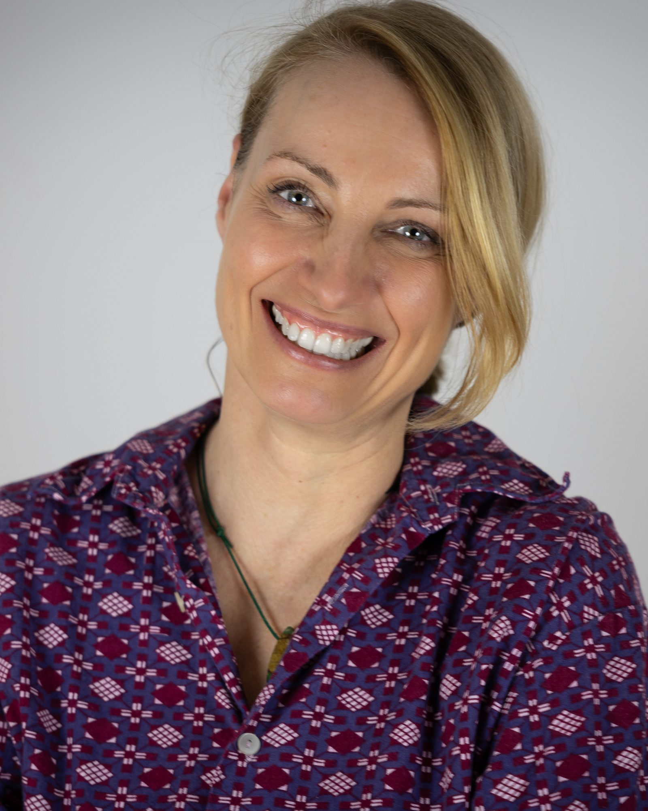

Start / Kontakt
Kontakt
Schreiben Sie mir, oder rufen Sie an
Ich freue mich, von Ihnen zu hören. Wenn ich gerade in einer Sitzung bin, schreiben Sie mir gern eine SMS oder WhatsApp. Ich melde mich so bald wie möglich.

Praxis
Lebensfarben · Praxis für Somatic Experiencing
Kristin Damaschke · LebensfarbenLübsche Straße 71
23966 Wismar
Das Erstgespräch findet meist hier in der Wismarer Altstadt statt. Die weiteren Sitzungen in einem ruhigen Praxisraum etwas außerhalb von Wismar; die genaue Adresse erhalten Sie mit der Terminbestätigung. Online-Sitzungen sind jederzeit möglich.
- Termine
- nach Vereinbarung, auch samstags
- Einzugsgebiet
- Wismar, Nordwestmecklenburg, Schwerin, Lübeck und online
In einer akuten Krise: Telefonseelsorge 0800 111 0 111 (rund um die Uhr, kostenfrei), ärztlicher Bereitschaftsdienst 116 117, Notruf 112.